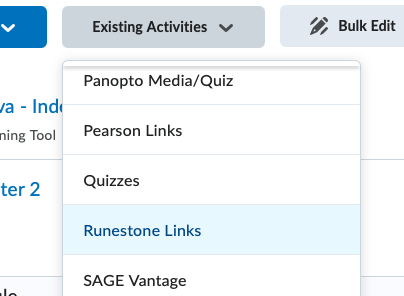

Runestone provides two methods of LTI integration. LTI 1.1 and LTI 1.3. LTI 1.3 is the newer standard and is more secure and more flexible. However, it requires setup by an administrator of your Learning Management System (LMS). LTI 1.1 can be set up by an individual instructor without LMS admin support.
Runestone’s LTI 1.3 integration has been tested against Canvas, Moodle, and D2L. Others LMS systems that support LTI 1.3 may or may not work. We welcome reports of successful use with other LMS systems and code pull requests to add any necessary support for other LMS systems. Community driven support is available on the #lti_community_support channel of the Runestone Discord Server.
Subsection4.4.2LTI1.3 Integration Basic Information
LTI1.3 integration can include syncing user’s names and emails from the LMS platform or be done anonymously. The Runestone Privacy Policy specifies how any synchronized data is used and protected.
Integration must be setup one time by someone with administrator authority on your LMS. Once setup, Runestone can be added to a course by any instructor. (Depending on the LMS, instructors may need a piece of information from the LMS admin to do so.)
When using LTI integration between Runestone and an LMS, students should NOT sign up for an account on Runestone. They should only access the Runestone book through the LMS, which will automatically create an account for them. Instructors will need to create an account with Runestone to set up their course and to link to the LMS.
The following must be completed one time by an LMS administrator. Once complete, instructors can link Runestone textbooks to their courses without further assistance from the LMS administrator. If you have run into issues with the setup or have questions, please open an issue on the Runestone github page. Specify “LTI 1.3 Integration” as the issue type. Make sure to include your contact information, the LMS platform you are using, the domain your LMS runs on, and any other relevant information.
Runestone supports the LTI Dynamic Registration protocol. (We do not support manual registration of LTI 1.3 tools via manual key exchange.) This means you will just need to enter one URL into your LMS and the two systems will negotiate the rest of the details:
For Runestone to properly function, you will likely need to ensure specific settings in your LMS system. See the subsections below for details on particular platforms. Please note that user interfaces on LMS platforms change over time and the shown screenshots and described options may not perfectly match what you see.
It is likely Runestone will work with other LMS platforms that support LTI 1.3, but we have not tested it with them. Refer to the notes below for platforms that have been tested for ideas on what kind of settings you might need to enable for Runestone to work properly.
Global settings for LTI features are available in Site Admin > Settings > Feature Options. Runestone relies on being able to create Deep Linking Line Items. To ensure proper functioning, check for the following settings. If they are available (options available there will depend on Canvas version) ensure that they are enabled:
To register Runestone as an available app, go to Site Admin > Apps > Manage and select Install a New App. Select 1.3 as the LTI version, Dynamic Registration as the method, and use the the URL listed above (Note 4.4.2). After pressing OK, you should get a confirmation message with a close button. Press that to continue to configure the App.
All the settings on the Permissions screen should be left on. (If you wish to configure Runestone to not share Personally Identifying Information about users, you will get a chance to do so in the next step.)
On the Data Sharing screen, leave the User Data Shared With This App setting as the default (All user data) to share user emails and names with Runestone. If you wish to disable doing so, you can change this to None.
From this point on, you should leave all settings as default - they just control what Runestone is titled within the LMS and what links are available to make use of it.
For an instructor to add Runestone to their course, they will need to know the ClientID that was assigned to Runestone. This can be found at Site Admin > Apps > Manage. Click the three dots next to the Runestone app and select Copy Client ID.
To register Runestone as an available app, go to Site administration > Plugins > External tool > Manage tools. Use the URL listed above (Note 4.4.2) as the Tool URL and press Add LTI Advantage. After pressing OK, you should get a confirmation message with a close button.
Then, under Privacy, you can choose to share user data with Runestone or not. If you wish to disable sharing user data, you can change Share launcher’s name with tool and Share launcher’s email with tool Never. Make sure to leave Accept grades from the tool set to the default or to Always.
Once Runestone is registered, under Manage Extensibility ensure that the settings look something like the following. In particular, make sure that Send Institution Role is enabled.
Finally, configure a Deep Linking Quicklink type Link for the Runestone deployment. Make sure the URL points to https://runestone.academy/deep_linking.
To use LTI 1.3 integration with a course, the domain of your LMS must be approved by a Runestone administrator. If your institution required Runestone to complete any paperwork as part of the setup of Runestone as an LTI 1.3 tool, this should already be complete. If your institution did not contact Runestone during setup, you will need to make a request for approval. You can do so by making a new issue on the Runestone github page. Select Request for LTI 1.3 Approval as the issue type and make sure to specify your contact information, and the domain your LMS runs on.
First make sure that you have a Runestone account. If you don’t have one, you can create one at Runestone Academy. Create a Runestone course to link to your LMS course. You may also wish to set up assignments in Runestone at this point, although you can always link new ones later. Before you try to link your LMS to a course and/or assignments, you should make sure you are logged into Runestone and currently viewing the course you want to link to.
Depending on how your LMS reports your identity to Runestone, when you access Runestone from the LMS by clicking a link to your RS course or book, you may or may not be logged into Runestone as the same user as the account you created. (If your LMS reports your email, and you set up your RS account with the same email, then you should be logged in as the same user.) If you end up with a different identity in Runestone, you will likely want to add that user as an instructor. You can do this by adding the user as a “TA”. See Section 4.5 for more information.
Each RS course can be linked to only one LMS course. This means that if you have multiple “courses” in your LMS for multiple sections or some other reason, you will need to create different RS courses for each LMS course. You can link multiple RS courses to the same LMS course (if you are using multiple books in one course.) If you need to unlink Runestone from an LMS, you can use the Remote LTI 1.3 Association button from the Admin > LTI Integration screen. Doing so will NOT remove any assignments or grades from the LMS, but it will prevent new grades from being sent to the LMS. You can then relink the course with the same LMS course or a new one.
There are some settings available in each Runestone course that affect LTI integration:
Under Admin > Course Settings, Show Points in Gradebook will affect how scores are reported to the LMS. If you want assignments reported to the LMS as points (3 / 4) instead of percent (75%), make sure this is checked. Note that settings in your LMS grade book may allow you to weight scores or change their display in other ways that override the way Runestone reports them to the LMS.
Under Admin > LTI Integration, checking Do not auto update LTI grades will prevent Runestone from trying to automatically send grade updates as a user completes activities. This may be desirable if your assignments contain lots of items that need to be hand graded and you do not want users to see misleading low grades for assignments that have not been fully scored yet.
You will need the Client ID of the Runestone installation on your LMS. Ask your LMS administrator for this piece of information. Refer them to LTI 1.3 Admin Setup - Canvas for information on how to find this.
If your LMS administrator has set up Runestone, you should see it displayed under More > LTI External Tools in your course settings. If you do not see it, ask your LMS admin to confirm that Runestone was set up to display as a preconfigured tool. You just need to toggle the Show in activity chooser to the on state.
Once your LMS administrator has set up Runestone LTI 1.3 support, you’ll need to make sure that your course has access to it. There are 2 places that you might see a way to create links. The first is in the content area under Existing Activities > Runestone Links.

The other is in the html page editor under the Insert Stuff icon. There would be a Runestone Insert Stuff item. Either of those will bring you to the Content Linking page described below.
There are two kinds of links that can be generated from Runestone:
Book Page Links These are links to a particular page in the book. When a user uses one of these links, they will automatically be logged into Runestone. If you wish to provide a generic “Log in to book” link, you can use one of these that points at the book entry page (index.html). Or you can generate links to any page in the book.
Assignment Links These are links to a particular assignment in the RS course. When you want a LMS assignment that is linked to a RS assignment, you must use this kind of link.
User activity is tracked and scores updated regardless of which form of link is used to access the Runestone content. The only difference other than where they link to is that Book Page Links do not create an entry in the LMS grade book.
Begin by setting up assignments you wish to link to in Runestone. Do not make LMS assignments—they will be created for you when you link to the Runestone assignments. (See Section 6.2 for coverage of making Runestone assignments.) For students to access a Runestone assignment (after clicking a link in the LMS), the RS assignment must be marked Visible to Students. This property is not linked to the LMS. If you want assignments to be rolled out gradually in the course, you will have to manage the process separately in your LMS and in RS by changing the visibility of assignments in both places.
To add content to your course, look for the Runestone option in whatever allows you to add content items to a module/course etc... in your LMS (see subsections below for LMS specific notes).
When you open the Runestone Content Linking panel, you will see two sections. First you will see a section to generate New Book Page Links. Click Add book link as many times as you like to generate dropdowns that can be used to select book pages. Use the dropdown to select the page(s) you want to make links to. Each will be generated as a separate content item in your LMS.
Below that is the Assignment Links area. Here a table is displayed with each Runestone assignment. For each one, the current LMS assignment (if any) that it is linked to is displayed. If the RS assignment is linked to an assignment in the current LMS course, that will be displayed and you will not be able to perform any action. To delete the assignment, do some from your LMS. For unlinked assignment, you will be given three options:
Finally, the Submit Form button will update Runestone to link the RS course to this LMS course (so it knows where to send grades) and will send a message to your LMS to generate the desired content links. Your LMS may or may not give you a chance to confirm the changes after this point.
If you ever need to, it is safe to delete an assignment in the LMS. No RS data will be deleted. If desired, you can then readd the assignment in the LMS and re-push any available grades.
Grades are normally sent by Runestone to the LMS at the following times:
A learner interacts with any graded element of the course that is part of an active assignment with released grades. (Grade updates should happen whether the user is viewing the problem “in context” or in the assignment view).
The instructor goes to the Grading tab of the admin interface, selects an assignment and presses the Push Grades to LTI button. This will send score updates for that assignment for all users in the course regardless of whether or not scores are released in Runestone.
The instructor goes to the Grading tab of the admin interface, selects an assignment and a particular Student, then enters a manual override grade and presses Push Grade to LMS. This will send the grade for that one user, regardless of whether or not scores are released in Runestone.
This means that if you want users to see score updates as they complete work, you should “release” the assignment scores in Runestone as soon as assignments are created.
Your LMS is considered the authority on due dates. By default, Runestone assignments will update their due dates to match the LMS. To disable this behavior, you can check the Ignore LTI1.3 Date Changes box in the Admin > LTI Integration settings for your course. (Automatically syncing from Runestone to the LMS is not an option.)
When linking an existing LMS assignment to a Runestone assignment, the due date in Runestone will be updated to match the due date in the LMS (unless you have checked the Ignore LTI1.3 Date Changes).
When an assignment’s due date is changed in the LMS, the due date in Runestone will be updated to match (unless you have checked the Ignore LTI1.3 Date Changes). This will not happen until a user (instructor or student) uses the assignment link in the LMS to launch the assignment in Runestone. So, to force an update after modifying a due date, open the assignment.
In Runestone, make a new course. Copy all of the assignments from your old course to your new course. If you want to make sure the due dates are synced, do not check the Ignore LTI1.3 Date Changes box in the Admin > LTI Integration settings for your new course before finishing the linking process.
Assignments in Runestone and the LMS will be matched by name. If the assignment names do not match, change the name(s) on either platform so corresponding assignments are identically named.
Now you are ready to link the copies on the two platforms. Make sure you are still logged into the new course in Runestone as you complete the linking.
In your LMS, use the add content feature and select the Runestone tool. Assuming your assignments in the two platforms have matching names, the default actions suggested for each RS assignment will be to link to the existing LMS assignment with the same name.
Submit the form to complete the linking process. You may get a message like “Tool returned no content” as there were no new assignments sent from Runestone back to the LMS. But, the selected assignments should now be linked. Click one to verify.
To add content items, use one of the Add an activity or resource links in your course. Select Runestone from the available tools. You will be taken to a form adding one activity, but you can still add as many Runestone links as you like. Click the Select content button. When you finish selecting content, if you selected just one new RS item, you will return to the form to finish editing that activity and save it in your LMS. If you selected multiple items, you will return to a page that lists the items being added. If your actions do not add any new content (you are remapping copied assignments), you will be returned to a blank form but Runestone will have updated your selected items.
To add a link to an HTML page, use the Insert Quicklink > Runestone Links button when your cursor is where you want the link to be on the page. Then select a single link to add.
To add a link to an HTML page, you could alternatively use the Insert Stuff > Runestone Insert Stuff button when your cursor is where you want the link to be on the page. Then select a single link to add.
Note: You will only be able to make one link at a time. If there are multiple assignments that you can link, then you’ll need to either leave the other assignments as they were or set them as No Action before clicking Submit Form so that the system only tries to make one link. (Otherwise it will fail.)
Note: your browser needs to allow cross-site tracking if you want to add a link to a page. If you are creating a link from the Content tab, then you can have cross-site tracking off, but you’ll navigate to another page to make the link, and you’ll need to verify that the link was created by going back to D2L.